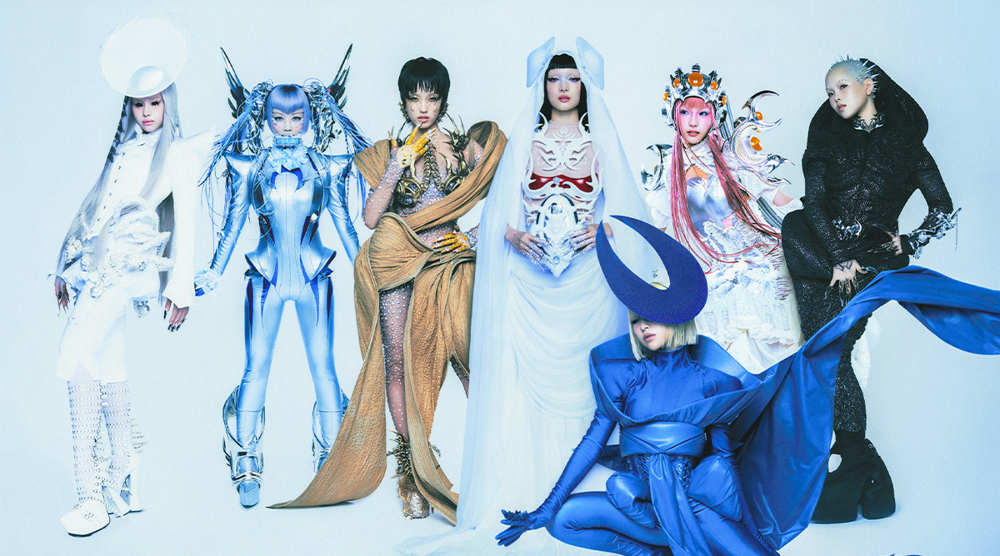
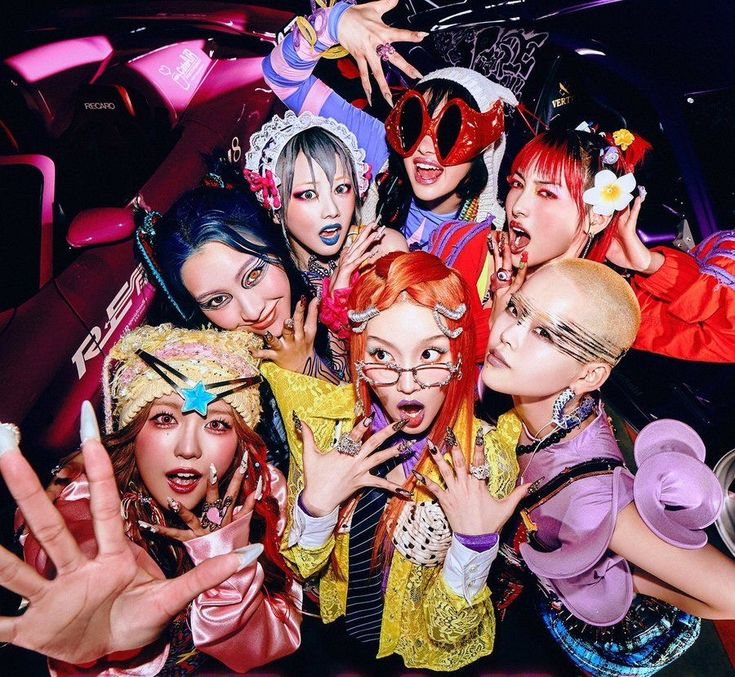

XG is a newer girl group that has been gaining a lot of attention for their bold image and confident sound. They’re known for blending hip-hop, R&B, and pop in a way that feels fresh, global, and intentional rather than tied to one specific industry style. Their strong visuals, precise choreography, and fashion-forward concepts make each release feel carefully planned and impactful, which helps them stand out among other new groups.What really sets XG apart is their powerful attitude and performance energy. They come across as fearless and self-assured, especially through their rap-heavy verses and sharp dance performances, which give them a commanding stage presence. Instead of simply following trends, XG feels like they’re building their own identity and lane, which is why many fans see them as one of the most exciting and promising new groups right now.